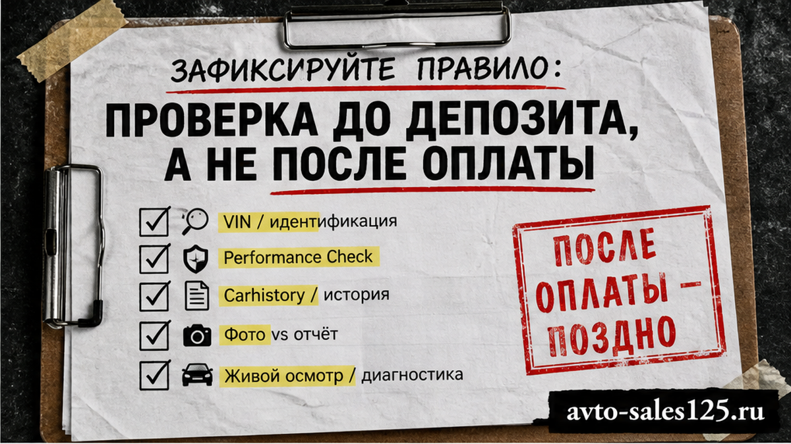
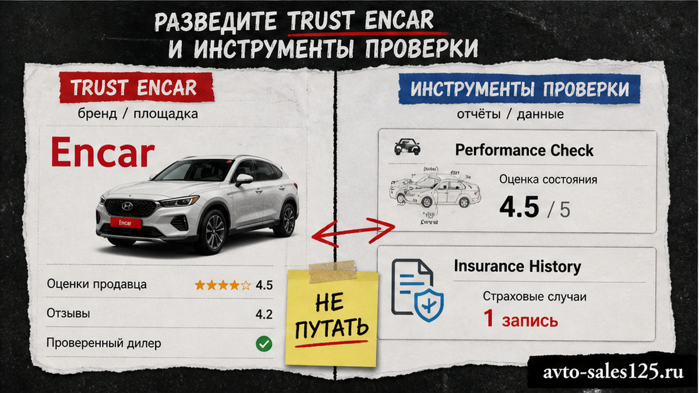
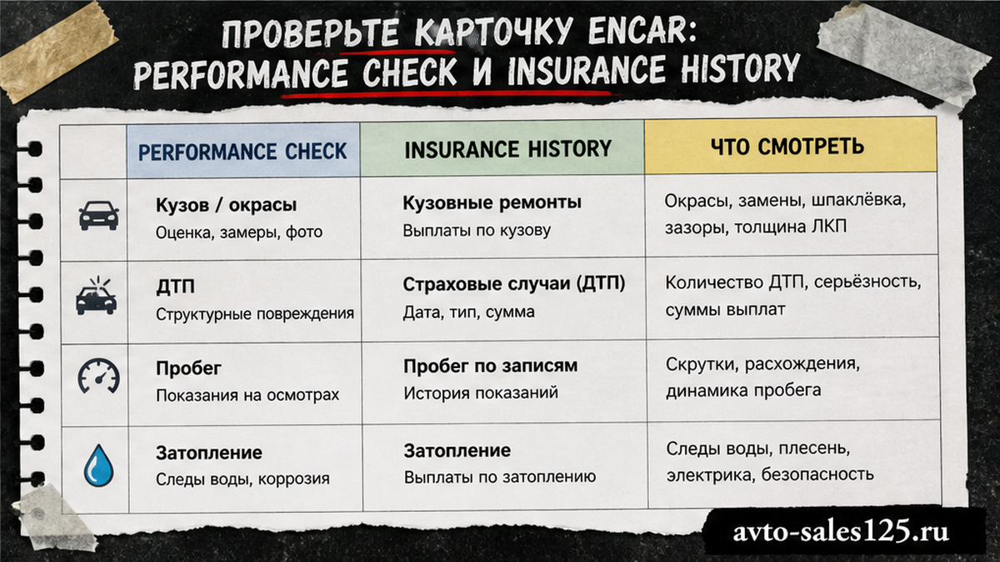

В выдаче по запросу "trust encar" часто всплывают посредники и красивые каталоги, а депозит просят ещё до полной проверки. Ошибка дорогая: битый кузов, утопленник или "чистый" пробег на бумаге. Ниже – пошаговая проверка корейского авто до депозита: карточка Encar, Carhistory по VIN, живой осмотр и стоп-правила оплаты. После гайда вы сами отсеете сомнительный лот или передадите проверку команде Авто-Сейлс.
TL;DR / Быстрый инсайт: Trust Encar в российской выдаче чаще про коммерческий канал, а не про кнопку проверки. Инструменты до депозита – Performance Check и Insurance History на Encar плюс отчёт Carhistory по VIN. Депозит – только после пакета: VIN + схема кузова + страховая история + flood-check + фото/видео осмотра. Нет пакета – нет перевода.
Корея через Encar – удобный рынок, но история машины размазана по слоям. Схема кузова показывает текущее состояние. Carhistory тянет прошлое по страховым данным. Посредник с красивым сайтом не заменяет ни то, ни другое. Мы в Авто-Сейлс во Владивостоке ведём заказы из Кореи и сначала собираем факты, а уже потом говорим про бронь.

Депозит – уже деньги в чужой стороне сделки. Если после перевода всплывёт замена лонжерона или крупная выплата, торг резко слабеет. Сначала фиксируете лот, потом проверяете, и только потом обсуждаете оплату.
Делать: пишите: "нужен полный VIN, Performance Check, Carhistory и видео осмотра до любого депозита". Не делать: переводить "за бронь", пока нет VIN и отчётов – фото салона не считаются проверкой.
Схема до депозита:
Ссылка на лот Encar → Полный VIN → Performance Check (X/W) → Insurance History → Carhistory + flood → Живой осмотр → Решение по депозиту

На пальцах: Encar.com – корейская площадка объявлений и диагностики. В карточке лота обычно есть схема кузова (Performance Check) и блок страховой истории (Insurance History). Carhistory – отдельный официальный сервис истории б/у авто: вводите VIN и получаете отчёт по страховым данным.
Сайты вроде trust-encar.ru в выдаче часто позиционируют себя как "официальный бренд Encar" и каталог под заказ. Это коммерческий канал. Он может помочь с подбором, но не заменяет Carhistory и чтение схемы кузова. Скрин "всё ок" без VIN и без ссылки на отчёт – ещё не проверка.
| Источник | Что показывает | Чего не хватает | До депозита |
|---|---|---|---|
| Performance Check (Encar) | Текущее состояние кузова, замены/ремонт | Полной прошлой истории без страховки | Обязательно |
| Insurance History (Encar) | Страховые события по карточке | Случаев без обращения в страховую | Обязательно |
| Carhistory (VIN) | Страховая история, владельцы, ущерб (данные с акцентом с 1996) | "Гарантии" на скрытые ремонты без полиса | Обязательно |
| Каталог посредника в выдаче | Подбор и сервис заказа | Самостоятельной верификации VIN-отчёта | Только вместе с отчётами выше |
Делать: требуйте первоисточники (VIN, файл Carhistory, схема кузова). Не делать: путать бренд посредника в поиске с официальной базой истории.

Сохраните ссылку, модель, год, пробег и цену в вонах. Без полного VIN дальше не идёте – "пришлём после оплаты" уже красный флаг.
Performance Check – про сейчас. Carhistory – про прошлое по страховке. По отдельности каждый оставляет слепую зону.
Делать: читать схему сами или через человека, который объяснит X/W. Не делать: принимать "лист чистый" без вашей копии схемы.
Carhistory (carhistory.or.kr / carhistory.kr) работает на страховых данных. На момент публикации полный Car History Report на официальной странице стоит KRW 2,200 за запрос (включая VAT). Есть бесплатный Flood Damage History – узкий flood-check, не полная история "всего мира".
Официальный дисклеймер: ДТП без обращения в страховую может не отобразиться. Отчёт – вспомогательный инструмент, не индульгенция.
Ориентиры выплат в вонах у практиков импорта (эвристика, не закон): до ~0,5 млн – мелочь; 0,5–2 млн – средний риск; больше ~3 млн – красный флаг без живой проверки.
Делать: платите за полный отчёт по VIN и сохраняйте файл. Не делать: верить скрину "без ДТП" без даты и полного VIN в кадре.
Цифры должны сходиться с картинкой. Проверьте толщину ЛКП, болты, шпаклёвку и мотор – это глаза и толщиномер в Корее, не только PDF. Используйте видеообход с датой съёмки.
Надёжный подборщик отдаёт пакет до выкупа. Если говорят "сначала депозит, потом посмотрим" – это другой риск. Актуальные лоты и расчёты – в каталоге avto-sales125.ru, детали по VIN – в Telegram @avtosales125.
Делать: требовать видео с датой и VIN в кадре. Не делать: оплачивать очередь на осмотр без пакета документов.
Делать: при флаге ставьте лот на паузу. Не делать: закрывать глаза ради комплектации – в Корее выбор есть. Избегайте перевода «только сегодня», пока нет файлов отчётов.
Нужен подбор под ключ – откройте каталог Авто-Сейлс до перевода депозита. Форм на странице нет: расчёты и бронь живут в каталоге и переписке.
Делать: идти по чеклисту сверху вниз. Не делать: пропускать flood и осмотр из-за "короткого красивого" отчёта.
Материал проверен: редакция Авто-Сейлс (эксперты по авто под заказ из Японии, Кореи и Китая).
Достоверность: факты сверены с открытыми источниками (Encar-практика, официальный Carhistory) и практикой сопровождения заказов; актуальные расчёты и подбор – в каталоге.
Carhistory – официальный сервис страховой истории по VIN. "Trust Encar" в российской выдаче чаще ведёт на коммерческий канал подбора. До депозита нужны схема и история на Encar плюс отчёт Carhistory, а не только сайт посредника.
Нет. Сверяйте пробег с Insurance History, числом владельцев и Carhistory. Если цифры пляшут или VIN не дают – не переводите депозит.
Ставьте лот на паузу. Запросите пояснение с датами, закажите осмотр и не оплачивайте, пока расхождение не закрыто документами. При давлении "только сегодня" – лучше другой лот.
Нет. Flood-check ловит затопление по страховым записям, но не заменяет полный отчёт по выплатам и владельцам. До депозита берите платный отчёт и flood вместе.
На практике X часто читают как замену элемента, W – как след ремонта на схеме Performance Check. На лонжеронах и стойках это стоп или повод для жёсткого осмотра, не для быстрого депозита.
Рискованно. Страховая база не видит ремонты без полиса. Толщиномер и видео закрывают дыру, которую PDF не закрывает. Минимум – фото/видео с VIN до оплаты.
Передайте проверку до депозита команде, которая работает с Кореей регулярно. В Авто-Сейлс это каталог и переписка в Telegram – без форм на странице и без оплаты вслепую.